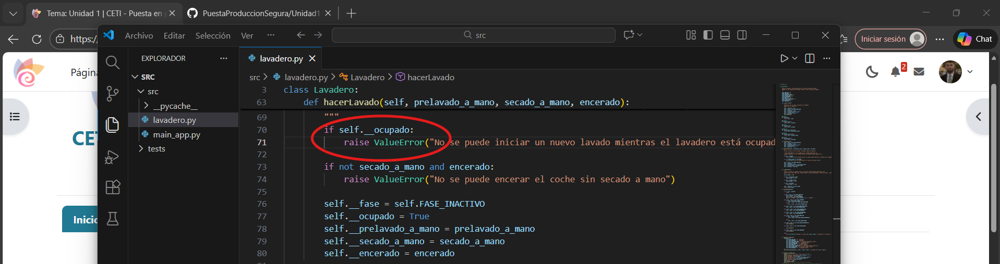
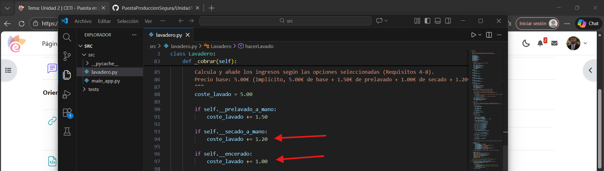
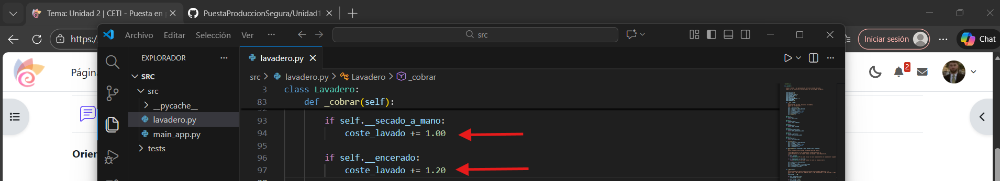
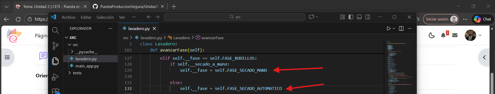

En esta sección. lo que vamos a realizar es la depuración del código y la ejecución del mismo, de esta forma, podremos observar sus errores y corregirlos.
El primer paso será abrir el Visual Studio Code. Una vez dentro, seleccionaremos la carpeta donde se encuentra la app:

Una vez abierta la carpeta donde se encuentra la app, la cual es main_app.py, lo que haremos será ejecutarla, para ello, clickamos en el boton de play situado en la esquina superior derecha:

Pero antes de ejecutarlo, lo que debemos hacer es leer las premisas con las cuales se ha diseñado la app, y corregir los errores que encontremos en el código, debido a que si ejecutamos la app así, nos saldrá un error bastante rápido.
Por lo tanto, lo que vamos a hacer es corregir los errores, y después, probaremos a ejecutar la app a ver si todo funciona correctamente:
- Error 1: RuntimeError

Como podemos observar, aparece un RuntimeError cuando el lavadero está ocupado, mientras las premisas con las cuales se crearon la app nos indica: Cuando se intenta hacer un lavado mientras que otro ya está en marcha, se produce una ValueError.
Para corregir este error, simplemente cambiamos RuntimeError por ValueError:

- Error 2: Error en tarifas de secado a mano y encerado
Según las premisas del enunciado del ejercicio, la suma de lavado + secado a mano reportaría al lavadero unas ganancias de 6€, si a esto le añadimos encerado, sería un total de 7,20€.
Esto quiere decir que el precio del secado a mano debe ser de 1€, mientras que el del encerado debe ser de 1,20€.
El error está en que en el código, las tarifas vienen al revés, costando 1,20€ el secado a mano y 1€ el encerado:

Para corregir este error, simplemente lo que haremos será cambiar estos valores, como antes he mencionado, el valor del secado a mano le corresponde al valor del encerado y viceversa:

- Error 3: Error de lógica en fase de secado a mano y automático
En el código, aparece un error en la transición de una fase a otra. Según el código, cuando estamos en la fase de rodillos, si seleccionamos secado a mano, nos lleva a secado automático. Esto en ningún caso debería de ser así, puesto que si seleccionamos secado a mano, deberíamos ir a secado a mano:

Para solucionar esto, cambiaremos la parte donde se encuentra self.__fase = self.FASE_SECADO_AUTOMATICO y la pondremos donde está el self.__fase = self.FASE_SECADO_MANO:

- Error 4: Interrupción hacia el encerado
Como podemos observar en el código proporcionado, siempre que seleccionamos secado a mano, se llama a terminar. Esto no debería ser así, ya que nos debería dar opción a pasar al encerado:

Para solucionarlo, debemos añadir la opción de que nos deje acceder a la fase 8, la cual es encerado:

- Error 5: Función ejecutar_y_obtener_fases está fuera de la clase
Aunque como menciona el código, esta función no es parte del lavadero real, aún así, no se encuentra identada a la clase. ¿Qué problema ocasionará esto? Pues Que al usar self, el intérprete fallará porque no la reconoce como parte de Lavadero:
{kind=link}
Para solucionar esto, debemos mover el bloque hacia la derecha para que coincida con la identación de la clase:
{kind=link}
Como podemos observar, ahora sí se encuentra bien identado y será reconocible.